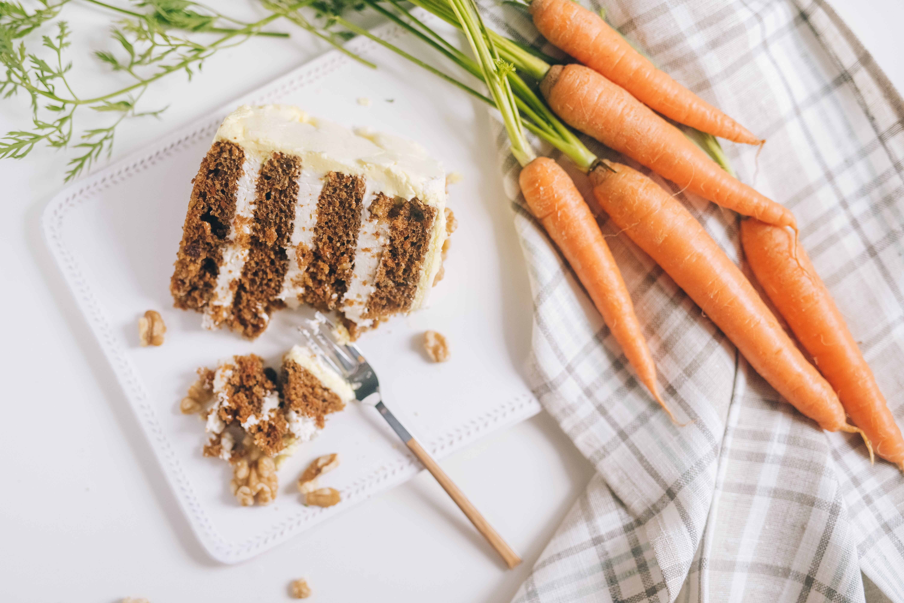

Carrot Cake

An easy carrot cake with icing and chopped pecans.
Ingredients
- 230ml vegetable oil
- 100g plain yogurt
- 4 large eggs
- 1½ tsp vanilla extract
- ½ orange, zested
- 265g self-raising flour
- 335g light muscovado sugar
- 2 1/2 tsp ground cinnamon
- 1/4 fresh nutmeg, finely grated
- 265g carrots (3 large carrots), grated
- 100g sultanas or raisins
- 100g pecans, roughly chopped
Steps
-
Heat the oven to 180C, oil and line the base and sides of two 20cm cake tins with baking parchment.
Whisk the oil, yogurt, eggs, vanilla and zest in a bowl. Mix the flour, sugar, cinnamon and nutmeg
with a pinch of salt in a bowl.
-
Add the wet ingredients to the dry, along with the carrots, raisins and half the nuts.
Mix well to combine, then divide between the tins.
-
Bake for 25-30 mins or until a skewer inserted into the centre of the cake comes out clean.
Leave to cool in the tins.
-
To make the icing, beat the butter and sugar together until smooth. Add half the soft cheese and beat again,
then add the rest. Remove the cakes from the tins and sandwich together with half the icing.
Top with the remaining icing and scatter with the remaining pecans. Leave to cool.